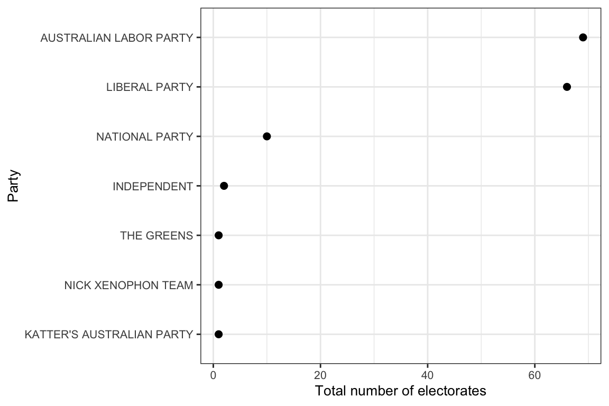
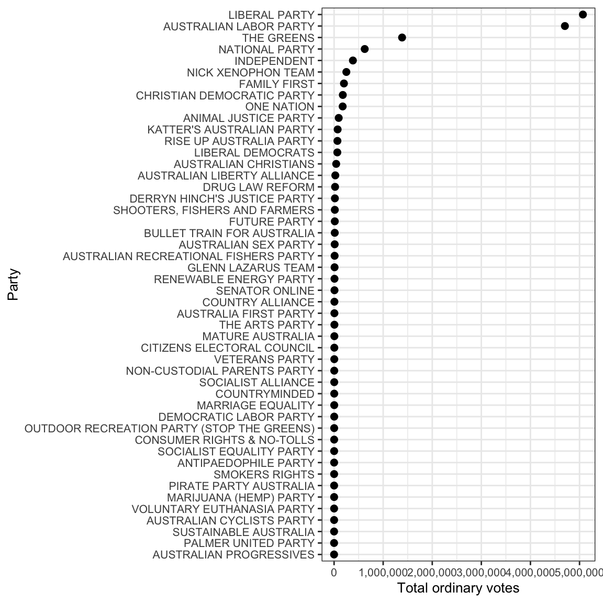
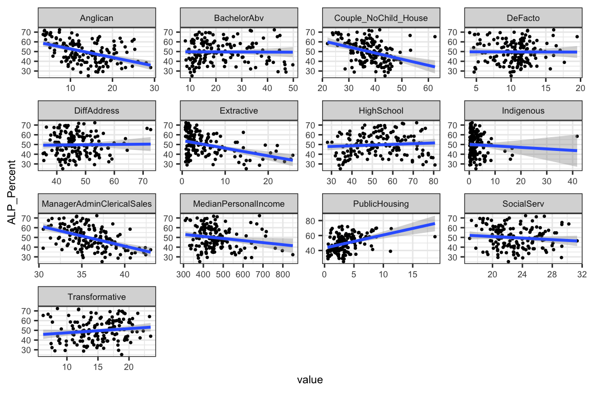

Exploring the Election data: a case study of 2016
Ben Marwick, Di Cook, Jeremy Forbes, Heike Hofmann, Rob Hyndman, Carson Sievert, Nicholas Tierney and Fang Zhou
2019-03-15
Source:vignettes/exploring-election-data.Rmd
exploring-election-data.RmdIntroduction
eechidna (Exploring Election and Census Highly Informative Data Nationally for Australia) is an R package that makes it easy to look at the data from Australian Census and Federal Elections from 2001 to 2016.
This vignette documents how to access the data from the 2016 Federal Election (House of Representatives: first preferences, two party preferred and two candidate preferred votes). We obtained these data from http://results.aec.gov.au/. This package incorporates data that is copyright Commonwealth of Australia (Australian Electoral Commission).
In this vignette we show a few typical methods to explore the data, inspired by Peter Ellis’s work on NZ election data.
2016 Federal Election House of Representatives data
Electorates
In the eechidna package we have three datasets for each election, summarised here:
| Data object name | Description |
|---|---|
| fp16 | first preference votes for candidates at each electorate (2016) |
| tpp16 | two party preferred votes for candidates at each electorate (2016) |
| tcp16 | two condidate preferred votes for candidates at each electorate (2016) |
The suffix 16 corresponds with the 2016 federal election, so objects for other elections will have an equivalent suffix, e.g. fp07 contains first preference votes for candidates in each electorate from the 2007 federal election.
We can access and explore each of these using common methods in R, for example:
library(eechidna)
library(tidyverse)
library(purrr)
library(knitr)
library(broom)
library(purrrlyr)
data(fp16)
data(tpp16)
data(tcp16)
data(abs2016)
# inspect the data frame
glimpse(fp16)## Observations: 994
## Variables: 13
## $ UniqueID <dbl> 801, 801, 801, 801, 802, 802, 802, 802, 802, 101…
## $ StateAb <chr> "ACT", "ACT", "ACT", "ACT", "ACT", "ACT", "ACT",…
## $ DivisionNm <chr> "CANBERRA", "CANBERRA", "CANBERRA", "CANBERRA", …
## $ BallotPosition <dbl> 1, 2, 3, 4, 1, 2, 3, 4, 5, 1, 2, 3, 4, 5, 6, 7, …
## $ CandidateID <dbl> 28189, 28336, 29373, 28989, 28190, 28200, 28983,…
## $ Surname <chr> "BRODTMANN", "CAHILL", "BUCKNELL", "ADELAN-LANGF…
## $ GivenNm <chr> "GAI", "PATRICIA", "CHRISTOPHER D'ARCY", "JESSIC…
## $ PartyAb <chr> "ALP", "GRN", "BTA", "LNP", "ALP", "IND", "LNP",…
## $ PartyNm <chr> "AUSTRALIAN LABOR PARTY", "THE GREENS", "BULLET …
## $ Elected <chr> "Y", "N", "N", "N", "Y", "N", "N", "N", "N", "N"…
## $ HistoricElected <chr> "Y", "N", "N", "N", "Y", "N", "N", "N", "N", "N"…
## $ OrdinaryVotes <dbl> 55091, 19200, 6013, 48416, 56796, 4707, 38930, 1…
## $ Percent <dbl> 42.80, 14.92, 4.67, 37.61, 45.80, 3.80, 31.39, 1…| UniqueID | StateAb | DivisionNm | BallotPosition | CandidateID | Surname | GivenNm | PartyAb | PartyNm | Elected | HistoricElected | OrdinaryVotes | Percent |
|---|---|---|---|---|---|---|---|---|---|---|---|---|
| 801 | ACT | CANBERRA | 1 | 28189 | BRODTMANN | GAI | ALP | AUSTRALIAN LABOR PARTY | Y | Y | 55091 | 42.80 |
| 801 | ACT | CANBERRA | 2 | 28336 | CAHILL | PATRICIA | GRN | THE GREENS | N | N | 19200 | 14.92 |
| 801 | ACT | CANBERRA | 3 | 29373 | BUCKNELL | CHRISTOPHER D’ARCY | BTA | BULLET TRAIN FOR AUSTRALIA | N | N | 6013 | 4.67 |
| 801 | ACT | CANBERRA | 4 | 28989 | ADELAN-LANGFORD | JESSICA | LNP | LIBERAL | N | N | 48416 | 37.61 |
| 802 | ACT | FENNER | 1 | 28190 | LEIGH | ANDREW KEITH | ALP | AUSTRALIAN LABOR PARTY | Y | Y | 56796 | 45.80 |
| 802 | ACT | FENNER | 2 | 28200 | WOODMAN | ANDREW | IND | INDEPENDENT | N | N | 4707 | 3.80 |
We can see that the data contains 994 rows and 13 columns. Each of the six data objects can be accessed and inspected in this way. Note that some parties have slightly different names in different states. We’ve simplified the data by renaming some of the parties to the varient of the name that won the most votes.
Polling booths
The same three voting measures are also available for each polling booth, of which there are over 7,000 in each election. These can be downloaded from github using the firstpref_pollingbooth_download, twoparty_pollingbooth_download and twocand_pollingbooth_download functions, which contain all results from 2001-2016 elections. In these datasets, the variable year represents the election year, so an individual years’ polling booth data can be easily obtained using filter from the dplyr package.
Exploring the election results
Which party won the election?
We can summarise the data to discover some basic details about the election. Let’s start by reproducing the overall result of the election by finding out which party won the most electorates according to the two candidate preferred votes:
who_won <- tcp16 %>%
filter(Elected == "Y") %>%
group_by(PartyNm) %>%
tally() %>%
arrange(desc(n))
# inspect
who_won %>%
kable()| PartyNm | n |
|---|---|
| LIBERAL | 76 |
| AUSTRALIAN LABOR PARTY | 69 |
| INDEPENDENT | 2 |
| KATTER’S AUSTRALIAN PARTY | 1 |
| NICK XENOPHON TEAM | 1 |
| THE GREENS | 1 |
# plot
library(scales)
ggplot(who_won,
aes(reorder(PartyNm, n),
n)) +
geom_point(size = 2) +
coord_flip() +
scale_y_continuous(labels = comma) +
theme_bw() +
ylab("Total number of electorates") +
xlab("Party") +
theme(text = element_text(size=10))
This result above matches the official AEC result, showing the Liberal party winning the most electorates (76).
Which party received the most ordinary votes?
An alternative way to evaluate the outcome of the election is by counting the number of ordinary first preference votes for each party (not including postal votes, preference flows, etc.). Here we can find the total number of ordinary votes for each party:
total_votes_for_parties <- fp16 %>%
select(PartyNm, OrdinaryVotes) %>%
group_by(PartyNm) %>%
dplyr::summarise(total_votes = sum(OrdinaryVotes, rm.na = TRUE)) %>%
ungroup() %>%
arrange(desc(total_votes))
# inspect
total_votes_for_parties %>%
head %>% # just the first 10 rows
kable| PartyNm | total_votes |
|---|---|
| LIBERAL | 5693606 |
| AUSTRALIAN LABOR PARTY | 4702297 |
| THE GREENS | 1385651 |
| INDEPENDENT | 383671 |
| NICK XENOPHON TEAM | 250334 |
| FAMILY FIRST | 201223 |
The table above shows a similar result, with the Liberal Party recieving the most ordinary votes.
We can plot the ordinary vote count like so:
ggplot(total_votes_for_parties,
aes(reorder(PartyNm, total_votes),
total_votes)) +
geom_point(size = 2) +
coord_flip() +
scale_y_continuous(labels = comma) +
theme_bw() +
ylab("Total ordinary votes") +
xlab("Party") +
theme(text = element_text(size=10))
Which candidate did the best?
There are a few ways we can answer this question. We can see who received the highest number of ordinary votes, like this:
who_most_votes <- fp16 %>%
filter(CandidateID != 999) %>% #exclude informal votes
mutate(candidate_full_name = paste0(GivenNm, " ", Surname, " (", CandidateID, ")")) %>%
group_by(candidate_full_name) %>%
dplyr::summarise(total_votes_for_candidate = sum(OrdinaryVotes, rm.na = TRUE)) %>%
arrange(desc(total_votes_for_candidate))
# inspect
who_most_votes %>%
mutate(total_votes_for_candidate =
prettyNum(total_votes_for_candidate,
big.mark = ",")) %>%
head %>%
kable| candidate_full_name | total_votes_for_candidate |
|---|---|
| BRENDAN O’CONNOR (28274) | 61,111 |
| PAUL FLETCHER (28565) | 57,232 |
| ANDREW KEITH LEIGH (28190) | 56,797 |
| MICHAEL MCCORMACK (29304) | 56,582 |
| ANDREW BROAD (28415) | 56,252 |
| JULIE BISHOP (28746) | 56,176 |
But this is a crude measure of how successful a candidate was in the election, because electorates with more people will result in more votes for the winner, even if the victory is only by a tiny margin. So let’s remove the effect of the population size in the electorates by finding out who won the highest proportion of first preference votes in their electorate.
who_most_votes_prop <- fp16 %>%
filter(CandidateID != 999) %>% #exclude informal votes
mutate(candidate_full_name = paste0(GivenNm, " ", Surname, " (", CandidateID, ")")) %>%
group_by(candidate_full_name) %>%
dplyr::summarise(total_votes_for_candidate = sum(Percent, rm.na = TRUE)) %>%
arrange(desc(total_votes_for_candidate)) %>%
dplyr::rename(percent_votes_for_candidate = total_votes_for_candidate)
# inspect
who_most_votes_prop %>%
mutate(percent_votes_for_candidate =
prettyNum(percent_votes_for_candidate,
big.mark = ",")) %>%
head %>%
kable| candidate_full_name | percent_votes_for_candidate |
|---|---|
| JULIE BISHOP (28746) | 66.5 |
| ANDREW BROAD (28415) | 65.31 |
| JASON CLARE (28931) | 64.31 |
| BRENDAN O’CONNOR (28274) | 63.29 |
| MALCOLM TURNBULL (28638) | 63.26 |
| PAUL FLETCHER (28565) | 62.12 |
In the above table (which shows just the first ten rows for convienience) we see that Julie Bishop received the highest proportion of first preference votes in any electorate, as well as a few more familiar names doing very well in their electorates. We can see that taking about 65% of the first preference vote in an electorate counts as a huge win. But what about who won with the least amount of first preference votes?
Which candidate won with the smallest percentage of votes?
who_won_least_votes_prop <- fp16 %>%
filter(Elected == "Y") %>%
arrange(Percent) %>%
mutate(candidate_full_name = paste0(GivenNm, " ", Surname, " (", CandidateID, ")")) %>%
select(candidate_full_name, PartyNm, DivisionNm, Percent)
who_won_least_votes_prop %>% head %>% kable| candidate_full_name | PartyNm | DivisionNm | Percent |
|---|---|---|---|
| MICHAEL DANBY (28267) | AUSTRALIAN LABOR PARTY | MELBOURNE PORTS | 27.00 |
| CATHY O’TOOLE (28997) | AUSTRALIAN LABOR PARTY | HERBERT | 30.45 |
| JUSTINE ELLIOT (28987) | AUSTRALIAN LABOR PARTY | RICHMOND | 31.05 |
| TERRI BUTLER (28921) | AUSTRALIAN LABOR PARTY | GRIFFITH | 33.18 |
| STEVE GEORGANAS (29071) | AUSTRALIAN LABOR PARTY | HINDMARSH | 34.02 |
| CATHY MCGOWAN (23288) | INDEPENDENT | INDI | 34.76 |
Michael Danby won Melbourne Ports with just 27% of first preference votes.
How about the smallest winning margin that occured in the 2016 election? Let’s find the candidates who won their electorate by the slimmest advantage over their competitors, meaning the smallest difference between two candidate preferred votes.
Which candidate won by the smallest margin?
who_won_smallest_margin <- tcp16 %>%
filter(Elected == "Y") %>%
mutate(percent_margin = 2*(Percent - 50), vote_margin = round(percent_margin * OrdinaryVotes / Percent)) %>%
arrange(Percent) %>%
mutate(candidate_full_name = paste0(GivenNm, " ", Surname, " (", CandidateID, ")")) %>%
select(candidate_full_name, PartyNm, DivisionNm, Percent, OrdinaryVotes, percent_margin, vote_margin)
# have a look
who_won_smallest_margin %>%
head %>%
kable| candidate_full_name | PartyNm | DivisionNm | Percent | OrdinaryVotes | percent_margin | vote_margin |
|---|---|---|---|---|---|---|
| CATHY O’TOOLE (28997) | AUSTRALIAN LABOR PARTY | HERBERT | 50.02 | 44187 | 0.04 | 35 |
| STEVE GEORGANAS (29071) | AUSTRALIAN LABOR PARTY | HINDMARSH | 50.58 | 49586 | 1.16 | 1137 |
| MICHELLE LANDRY (28034) | LIBERAL | CAPRICORNIA | 50.63 | 44633 | 1.26 | 1111 |
| BERT VAN MANEN (28039) | LIBERAL | FORDE | 50.63 | 42486 | 1.26 | 1057 |
| ANNE ALY (28727) | AUSTRALIAN LABOR PARTY | COWAN | 50.68 | 41301 | 1.36 | 1108 |
| ANN SUDMALIS (28668) | LIBERAL | GILMORE | 50.73 | 52336 | 1.46 | 1506 |
We see that Labor candidate for Herbert, Cathy O’Toole, managed to secure the seat by a margin of only 35 votes - equating to 0.04% of total votes. Let’s see the distribution of first preference votes in Herbert for a bit more detail.
herbert_fp <- fp16 %>%
filter(DivisionNm == "HERBERT") %>%
arrange(-Percent) %>%
mutate(candidate_full_name = paste0(GivenNm, " ", Surname, " (", CandidateID, ")")) %>%
select(candidate_full_name, PartyNm, DivisionNm, Percent, OrdinaryVotes)
herbert_fp %>% kable| candidate_full_name | PartyNm | DivisionNm | Percent | OrdinaryVotes |
|---|---|---|---|---|
| EWEN JONES (28055) | LIBERAL | HERBERT | 35.50 | 31361 |
| CATHY O’TOOLE (28997) | AUSTRALIAN LABOR PARTY | HERBERT | 30.45 | 26900 |
| GEOFF VIRGO (29225) | ONE NATION | HERBERT | 13.53 | 11950 |
| COLIN DWYER (29222) | KATTER’S AUSTRALIAN PARTY | HERBERT | 6.87 | 6070 |
| WENDY TUBMAN (29207) | THE GREENS | HERBERT | 6.26 | 5533 |
| MICHAEL PUNSHON (29213) | FAMILY FIRST | HERBERT | 3.59 | 3175 |
| AARON RAFFIN (29357) | GLENN LAZARUS TEAM | HERBERT | 2.19 | 1937 |
| DAVID HARRIS (29256) | LIBERAL DEMOCRATS | HERBERT | 1.24 | 1096 |
| MARTIN BREWSTER (28994) | PALMER UNITED PARTY | HERBERT | 0.36 | 315 |
We see that the greatest proportion of first preferences in Herbert actually went to Ewen Jones (Liberal), not to Cathy O’Toole. The win is due to preference flow from minor parties to Labor.
How did each electorate vote in each state?
We can look at the proportion of voters for a particular party in each electorate, grouped by each state. This plot was inspired by Peter Ellis’s work on the NZ election data.
# summarise and compute proportion of votes for a particular party
p <- fp16 %>%
group_by(DivisionNm, StateAb) %>%
dplyr::summarise(TotalVotes = sum(OrdinaryVotes),
ProportionLabor = round(sum(OrdinaryVotes[PartyNm == "AUSTRALIAN LABOR PARTY"]) / TotalVotes, 3)) %>%
filter(TotalVotes != 0) %>%
arrange(desc(ProportionLabor)) %>%
group_by(StateAb) %>%
# send the data to the plotting function
do(plots=ggplot(data = .) +
aes(x = ProportionLabor,
y = reorder(DivisionNm, ProportionLabor),
size = TotalVotes,
label = StateAb) +
geom_point() +
ylab("DivisionNm") +
labs(title = .$StateAb) +
scale_x_continuous("Proportion voting Labor Party",
label = percent) +
scale_size("Number of\nvotes cast",
label = comma) +
theme_bw() +
theme(text = element_text(size=8)))
# draw the plots
library(gridExtra)
n <- length(p$plots)
nCol <- floor(sqrt(n))
do.call("grid.arrange", c(p$plots, ncol=nCol))
How do election results correlate with Census data?
One of our motivations for creating this package was to make it easy to explore relationships between political views and socio-economic conditions across Australia. With a few simple R functions, we can join the Census data to the election data and build models to explore relationships.
Here’s how we join the two datasets together, the common variable is the DivisionNm:
Now we can easily explore some relationships between the Census data and the two party preferred voting patterns. For example, what Census variable mostly strongly correlates with the percentage that vote Labor? The first step in these kinds of explorations is always to visualise the data:
# subset only the columns we want for the model
census_and_election_subset <-
census_and_election %>%
ungroup %>%
select(DivisionNm,
ALP_Percent,
Population:Volunteer_NS) %>%
select(-c(ends_with("NS"), EmuneratedElsewhere, InternetUse, starts_with("Age")))
# Plot
library(tibble)
correl_df <- cor(census_and_election_subset[, c(2:ncol(census_and_election_subset))],
use = "pairwise.complete.obs") %>%
as.data.frame() %>%
select(ALP_Percent) %>%
rownames_to_column(var = "Covariate") %>%
rename("Correlation_with_ALP" = "ALP_Percent") %>%
filter(Covariate != "ALP_Percent")
ggplot(aes(x = Correlation_with_ALP, y = reorder(Covariate, Correlation_with_ALP)), data = correl_df) + geom_point()
We can spot some potentially interesting correlations, as well as some obvious ones.
The table below gives an overall summary of the model containing all the Census variables. We see that the p-value is very low, indicating that we have some relationships that are probably not due to chance alone.
options(scipen = 10) # for more readable numbers
# compute the multiple regressions
multiple_regression_model <-
census_and_election %>%
ungroup %>%
select(ALP_Percent,
Population:Volunteer_NS) %>%
select(-c(ends_with("NS"), EmuneratedElsewhere, InternetUse, starts_with("Age"))) %>%
lm(ALP_Percent ~ .,
data = .)
multiple_regression_model %>%
glance %>%
dmap(round, 3) %>%
kable| r.squared | adj.r.squared | sigma | statistic | p.value | df | logLik | AIC | BIC | deviance | df.residual |
|---|---|---|---|---|---|---|---|---|---|---|
| 0.899 | 0.843 | 4.487 | 16.068 | 0 | 54 | -404.538 | 919.076 | 1084.66 | 1932.549 | 96 |
The table below shows the variables that have a significant effect on the percentage of Labor votes across all electorates:
# find the variables with a significant effect
multiple_regression_model %>%
tidy %>%
filter(p.value < 0.05) %>%
dmap_if(is.numeric, round, 3) %>%
arrange(p.value) %>%
kable| term | estimate | std.error | statistic | p.value |
|---|---|---|---|---|
| DeFacto | 6.067 | 1.416 | 4.285 | 0.000 |
| (Intercept) | 930.427 | 259.625 | 3.584 | 0.001 |
| Extractive | -1.280 | 0.377 | -3.392 | 0.001 |
| BachelorAbv | 2.513 | 0.884 | 2.845 | 0.005 |
| ManagerAdminClericalSales | -1.931 | 0.724 | -2.666 | 0.009 |
| Couple_NoChild_House | -6.530 | 2.496 | -2.616 | 0.010 |
| Indigenous | -1.029 | 0.399 | -2.577 | 0.011 |
| HighSchool | -0.997 | 0.406 | -2.455 | 0.016 |
| MedianPersonalIncome | -0.125 | 0.051 | -2.456 | 0.016 |
| DiffAddress | -0.721 | 0.299 | -2.409 | 0.018 |
| Transformative | -1.261 | 0.531 | -2.375 | 0.020 |
| Anglican | -0.788 | 0.338 | -2.333 | 0.022 |
| PublicHousing | 1.219 | 0.523 | 2.330 | 0.022 |
| SocialServ | -1.131 | 0.548 | -2.063 | 0.042 |
In the plots below, we can see the Census variables that have a statistically significant relationship with the percentage of Labor votes. There seems to be a positive relationship between voting Labor and defacto relationships, university education and public housing tenants. Labour force participation and proportion of workers in extractive jobs (e.g. mining, gas, agriculture), and median personal income are a negatively correlated variables, meaning that increases in the proportion of workers in extractive jobs and increases in median personal income correlate with decreases in the percentage of the Labor vote in that electorate.
# model that includes all Census variables
all_vars <- multiple_regression_model %>%
tidy %>%
filter(p.value < 0.05, term != "(Intercept)") %>%
arrange(p.value)
census_and_election %>%
ungroup %>%
select_(.dots = all_vars$term,
"ALP_Percent") %>%
gather(variable,
value,
-ALP_Percent) %>%
ggplot(aes(value, ALP_Percent)) +
geom_point(size = 0.5) +
geom_smooth(method = "lm") +
facet_wrap( ~ variable, scales = "free") +
theme_bw() + theme(text = element_text(size = 8))